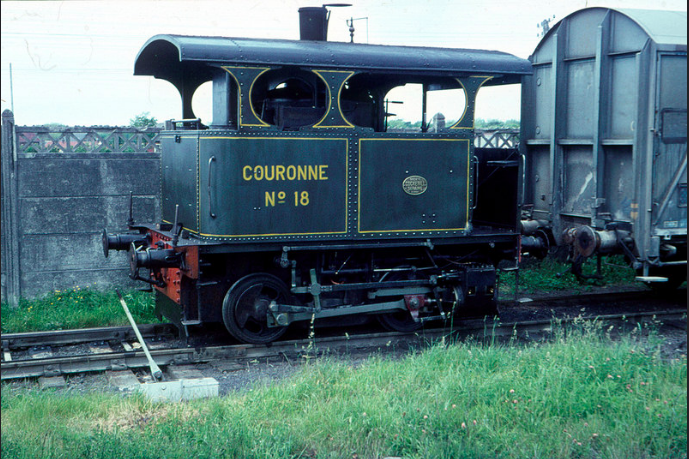
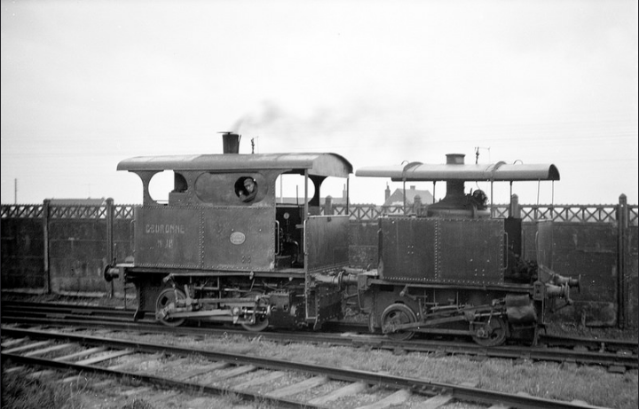
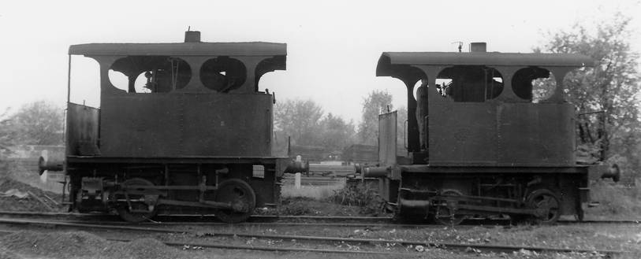
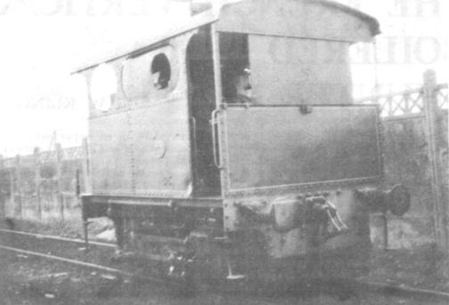
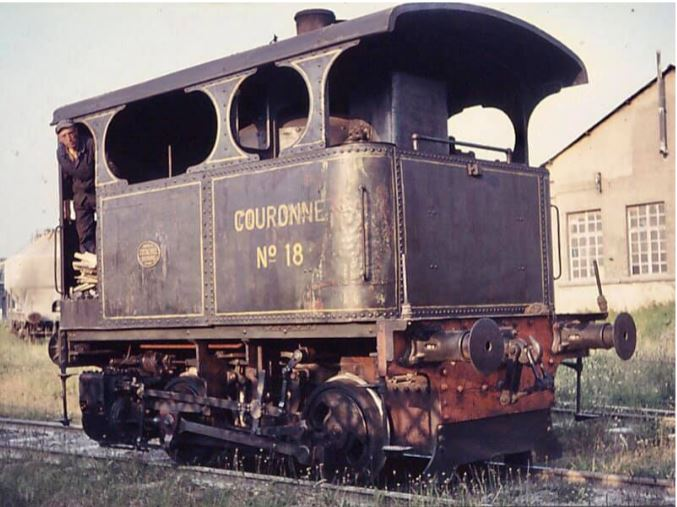

La Couronne N°18 en 1966 dans l’usine Portland Couronne de Dannes
La couronne n°18 et la Suzanne préservée actuellement à l’AJECTA de Longueville
Une locomotive Cockerill type V à coté d’une type IV.
La Cockerill n°3157 de 1926 (J.E.Beechey)
La Couronne le 13 juillet 1972 à Dannes (B.Bary)